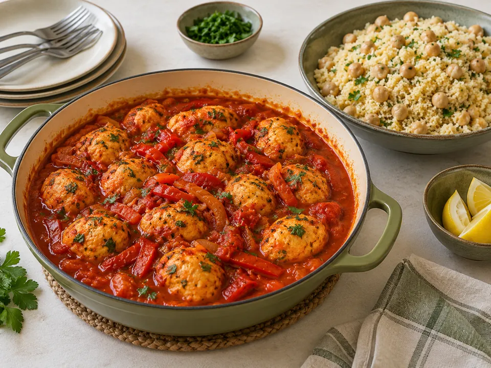

דגיםקציצות דג ברוטב פלפלים
עם קוסקוס וחומוס שסופגים את כל הרוטב
₪11.6–14.5לסועד · אומדן לכמויות במתכון
למתכון המלא ←תבשיל אדום עם תירס, אורז וטחינה בצד
5 סועדים: כ־₪8.4 לאדם · 4 סועדים: כ־₪10.5 לאדם
אומדן לעלות הכמויות במתכון, כולל שמן ותבלינים. איך חושב המחיר?
קולפים בטטה וחותכים לקוביות קטנות של כ־2 ס״מ. קוצצים בצל ושום. מחממים שמן בסיר ומטגנים בצל 5 דקות.
מוסיפים שום, פפריקה, כמון ורסק ומערבבים דקה. מוסיפים עגבניות קצוצות, בטטה וכוס וחצי מים. מתבלים, מכסים ומבשלים 20 דקות.
שוטפים ומסננים את השעועית והתירס. מוסיפים לסיר ומבשלים עוד 10 דקות עד שהבטטה רכה והרוטב סמיך. רוצים חריפות? מוסיפים מעט צ׳ילי למנה האישית.
במקביל מבשלים את האורז לפי הוראות האריזה. מערבבים טחינה עם לימון, מלח ומים ומגישים לצד התבשיל והאורז.
שעועית, בטטה ותירס יוצרים תבשיל עשיר בלי בשר ובלי תחליפי בשר. שימורים רגילים שטופים עושים כאן עבודה מצוינת.
שעועית וטחינה, אורז, בטטה ועגבניות.
אלרגנים מרכזיים במתכון: שומשום. יש לבדוק גם את תוויות המוצרים, התחליפים והתבלינים.
במתכונים עם חומוס ושעועית משתמשים בקטניות שכבר בושלו, לא בקטניות יבשות ללא בישול. זמני ההכנה אינם כוללים הפשרה או בישול מוקדם שלהן.

דגיםעם קוסקוס וחומוס שסופגים את כל הרוטב
 טבעוני
טבעוניתבשיל כתום עם תרד, אורז וסלט מלפפונים
 עוף
עוףעם אורז לבן וסלט כרוב וגזר קראנצ׳י